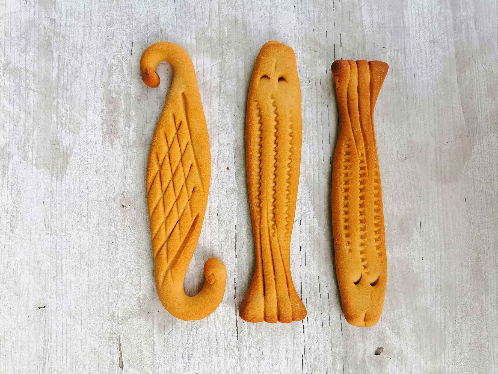

Mostaccioli

Calabrian mastazzola (or mostaccioli) are traditional hard, compact biscuits made with honey (or fig syrup) and
flour, with no added fats. Characterized by artistic and decorative shapes, they are a typical sweet of
festivals and village fairs, particularly in the Vibo Valentia and Cosenza areas.
Ingredients:
For 7 biscuits:
Honey
500gr
Flour 00
550gr
yolks
3 medium
Baking powder for sweets
8g
To brush and decorate
Honey
200gr
Preparation
To prepare the Calabrian Mostaccioli:
- first sift the flour in a bowl, along with the yeast
- In the center join the yolks and a part of the honey
- start whisking with a fork to collect the ingredients
- add the remaining honey
- tip:Adding the honey on several occasions will be easier to work the dough, but if you are more
experienced you can add the ingredients even at once and knead immediately
- Knead the ingredients with your hands and if necessary, add more flour.
- When the ingredients are collected, transfer the dough to the floured pavement and continue to knead
- you will have to proceed by forming a strand and then folding the ends towards the center
- if the dough is still sticky, add more flour
- When the dough will be homogeneous and compact, divide the dough into parts of 140 g each, there will be
about 7, and keep aside the dough that advances because it will serve for the decorations.
If you want you can make smaller or larger mustaccioli.
- Shape each piece in the shape of a loaf, about 30 cm long and flatten it a little with your hands so that it
is about 4 cm wide and about 2 cm high.
- Place the mustaccioli on a lollipop covered with baking paper
- With the remaining dough, form small thin loaves or balls and create the decorations to be placed on the
surface
- Bake the mustaccioli in a static oven already hot at 180 ° for 35-40 minutes (ventilated oven 160 ° for 30
minutes) until they have become a beautiful dark color
- Once baked, brush the still warm marshes with honey and decorate them with the tails or colored confetti to
taste! Let the mustaccioli dry for a few hours
so that the dough absorbs the honey, dries and the dough hardens. Serve the Calabrian mustaccioli whole or
divided into pieces like the cantucci
Home